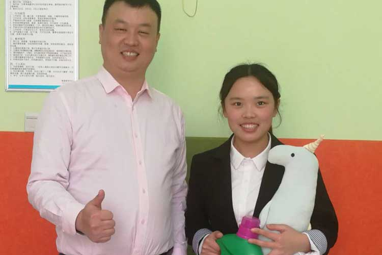

2018-04-04 09:25:30
2018年4月14日上午十点，整栋瑞曼教学楼香气扑鼻，仔细一瞧原来是在进行厨艺大比拼，有家长、有老师。
比赛正式开始后，大家按照各自的顺序，开始烹饪制作自己的美食。菠萝饭、西瓜肉、咖喱鸡肉饭、红烧鸡、红烧肉、烤鸡翅……一共十几道美食。
家长和老师们各个都大显身手，厨艺不相上下，经过数小时的忙碌，终于所有菜肴全部出锅。

最后开始品尝投票环节，经过激烈投票拉票，家长组畅畅妈妈的“红烧鸡”顺利夺冠，教师组美星老师的“菠萝古老肉”顺利夺冠。
每年的4月2日，是一个特殊的日，为了让跟多的人关注和了解自闭症儿童，2007年12月联合国大会通过决议，从2008年起，将每年的4月2日定为“世界自闭症关注日”。4月2日当天上午10点，以裕达国贸酒店陈总为代表及其团队前来瑞曼探望星儿。首先由办公室仝老师，带领爱心团队参观瑞曼整体教学环境，以及对整个教学区域和教学课程内容设置的讲解。
每年的4月2日，是一个特殊的日，为了让跟多的人关注和了解自闭症儿童，2007年12月联合国大会通过决议，从2008年起，将每年的4月2日定为“世界自闭症关注日”。4月2日当天上午10点，以裕达国贸酒店陈总为代表及其团队前来瑞曼探望星儿。首先由办公室仝老师，带领爱心团队参观瑞曼整体教学环境，以及对整个教学区域和教学课程内容设置的讲解。
每年的4月2日，是一个特殊的日，为了让跟多的人关注和了解自闭症儿童，2007年12月联合国大会通过决议，从2008年起，将每年的4月2日定为“世界自闭症关注日”。4月2日当天上午10点，以裕达国贸酒店陈总为代表及其团队前来瑞曼探望星儿。首先由办公室仝老师，带领爱心团队参观瑞曼整体教学环境，以及对整个教学区域和教学课程内容设置的讲解。